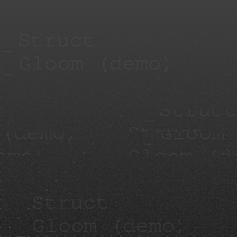
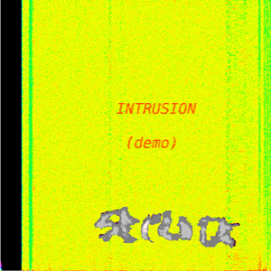

Releases
-

Gloom (demo)
(Sep 2017) (a little melodic, droney)
- Anti-Determinism
- Pulse of the Universe
- Menacing Dark
- The Art of Redefining Reality
- Tickle Your Brains
- Disrupt Harmony Smoothly
- Disalert I
- Disalert II
- Passing Time By as We Float
- Travelling Through Insecure Data
- Abstract Dream of the Unknown
-

Intrusion (demo)
(Oct 2017) (more chaotic, noisy)
- Gentle Force
- Escalation I
- Escalation II
- Systems Collapse
- Harm
- Input Coherence
- Violet Apparatus
- Signifrequent
- Architecture
- Self
- From Beyond the Membrane
- Plateau
- Stitches
- Oscillating Switch Inbetween
- Let Go
- Gone Purpose
-
Deep in Contemplation
(First proper (non-demo) album. Recording finished, in mixing stage. Will probably be released in autumn 2021.)
You can already listen to the demo version of one of the tracks: Mind Getting Lost (demo)
- Mind Getting Lost
- So Much Kept Inside
- To Cauterize
- Thought
- What Can Be Done
- When Emptiness Takes Over
- Drift, Detach, Disperse
- The Depths of the Future
-
... more tba ...